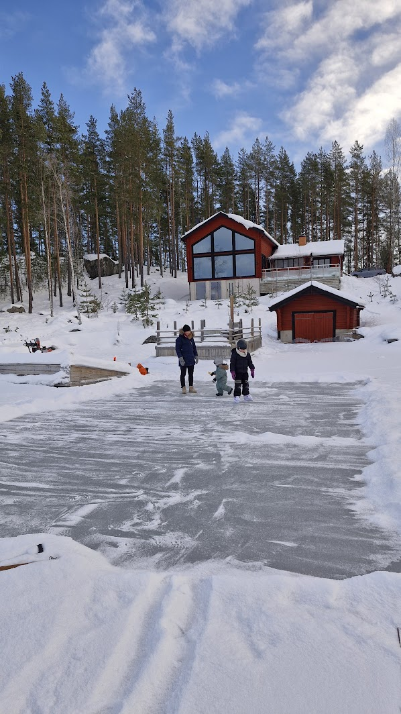
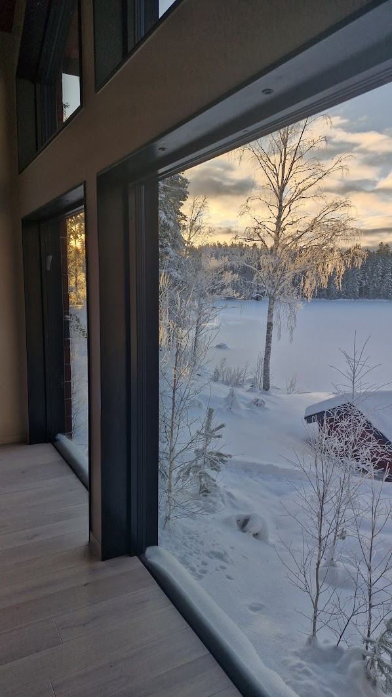
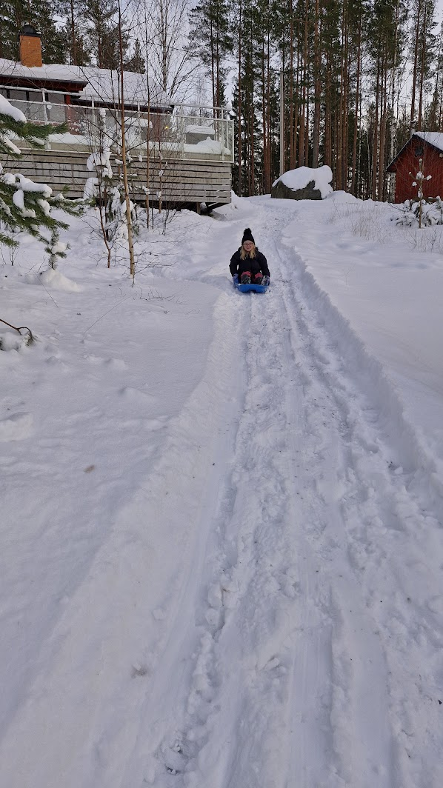
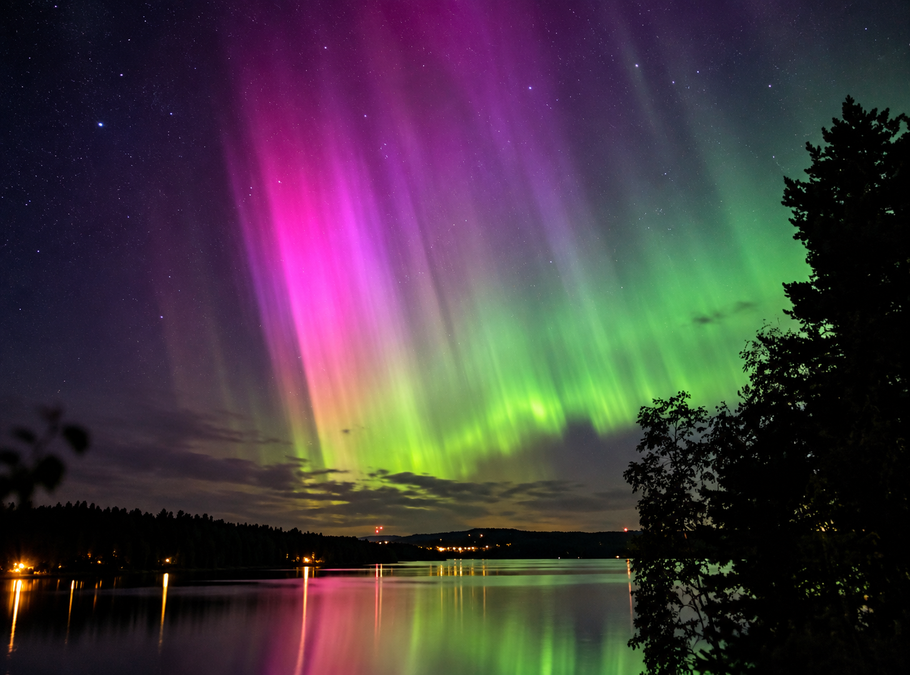
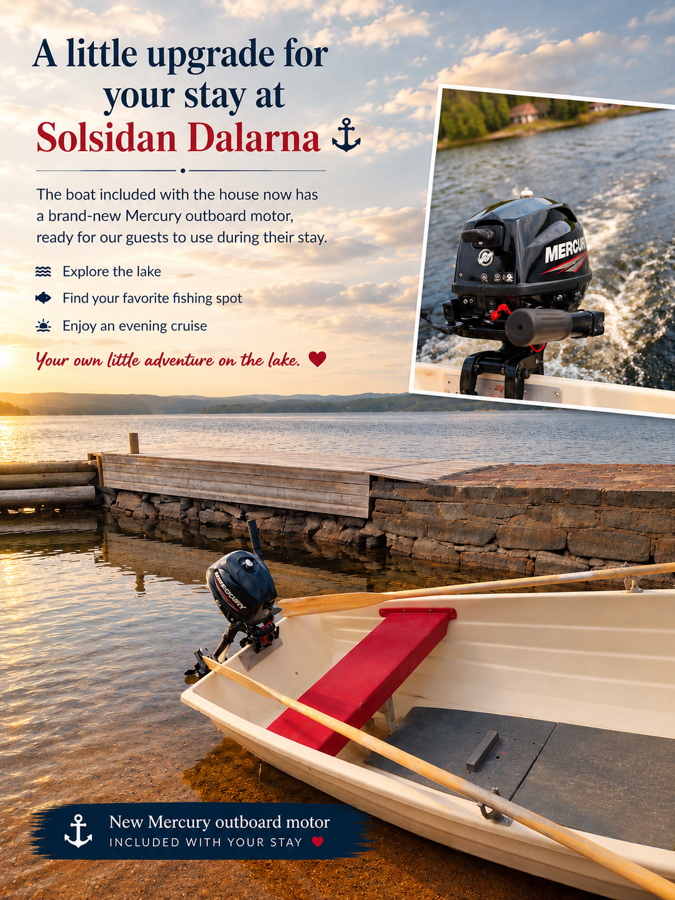

★★★★★
"The accommodation is actually even more beautiful than in the pictures. The view over the lake is fantastic and invites you to simply stay and relax."
WINTER EDITION · SOLSIDAN DALARNASUMMER EDITION · SOLSIDAN DALARNA
Snowy days outside. Warm evenings by the fire. Discover winter at Lake House Dalarna.Slow days on your private beach, a swim in the lake and long evenings on the terrace.
Sledding · Lake views · SaunaPrivate beach · Sauna · Boat
Lake House Dalarna combines modern Scandinavian architecture with one of the most beautiful lakeside settings in Dalarna.
Known to Airbnb guests as Solsidan Dalarna, this unique holiday home offers panoramic lake views, generous living spaces, large outdoor terraces and a peaceful atmosphere only 25 minutes from Falun.
Whether you are travelling as a family, with friends or simply looking for a relaxing getaway, this is a place designed for unforgettable moments.
Check availability
WINTER EDITION
Skating in front of the house when ice conditions allow, sledding in the snow and quiet moments overlooking the lake. Then warm up by the fire, or enjoy an evening in the sauna with a refreshing roll in the snow.

When ice conditions allow.

Enjoy the snowy lake from the warmth of the house.

Simple winter fun right outside.

Enjoy quiet evenings by the water. This northern lights photograph was taken at our house — a special moment to remember. Northern lights are a natural phenomenon and cannot be guaranteed during your stay.
Check availabilityPHOTO GALLERY



Explore the lake at your own pace. A boat with a Mercury outboard motor, life jackets and some fishing equipment are available for guests.
Guests pay for the petrol they use and refill the fuel can before departure. If you cannot refill it in time, please let us know in advance so we can try to arrange a solution.
WHY GUESTS LOVE IT
Step directly onto your own sandy beach and enjoy swimming, sunbathing or simply relaxing by the lake.
Enjoy a traditional Swedish sauna overlooking beautiful Lake Rogsjön.
Large windows frame breathtaking sunsets and peaceful lake views all year round.
Architect-designed interiors with generous living spaces, high ceilings and natural light.
Forests, hiking trails, fishing and swimming are only a few steps away.
Located only 25 minutes from Falun with easy access to the best attractions in Dalarna.
GUEST REVIEWS
Among the top-rated stays on Airbnb, based on guest ratings, reviews and reliability.
Read all reviews on Airbnb"The accommodation is actually even more beautiful than in the pictures. The view over the lake is fantastic and invites you to simply stay and relax."
"The house was, in one word, fantastic, modern and equipped with every comfort. Beautiful sunset from the house and being able to see the water."
"Simply a fantastic place; an unforgettable stay for us. A wonderful place you do not want to leave."
"An incredibly beautiful house with a fantastic view that was even better than the pictures. We would love to come back next summer."
DISCOVER DALARNA
Historic streets, restaurants, shopping and culture only 25 minutes away.
One of Sweden's most famous UNESCO World Heritage Sites.
Visit the legendary artist's beautiful home in Sundborn.
Long pier, cafés and one of Sweden's most charming lake destinations.
Traditional Dalarna with markets, events and beautiful surroundings.
A summer adventure park with water attractions, rides and activities for the whole family.
Classic Swedish ice hockey, strong local atmosphere and home games in Leksand during the season.
An open-air concert arena in a former limestone quarry, one of Dalarna's most memorable summer venues.
Excellent skiing during winter, less than an hour away.
Family-friendly outdoor adventures, skiing, cycling and lake activities in beautiful Bjursås.
A scenic local viewpoint and nature area for peaceful walks, forest views and fresh Dalarna air.
A beautiful local hiking trail for a quiet nature walk through classic Dalarna forest scenery.
READY FOR YOUR NEXT ESCAPE?
Known on Airbnb as Solsidan Dalarna, this unique lakeside retreat offers Scandinavian design, breathtaking lake views, a private sandy beach and a relaxing sauna — everything you need for an unforgettable stay in Dalarna.
LOCATION
The house is located in the Lake Rogsjön area, surrounded by forests, nature and crystal-clear water.
Despite the peaceful surroundings you are only about 25 minutes from Falun and within comfortable driving distance of many of Dalarna's most popular destinations.
Discover the bedrooms, the sauna and the story behind our house by the lake.
Read more about the house